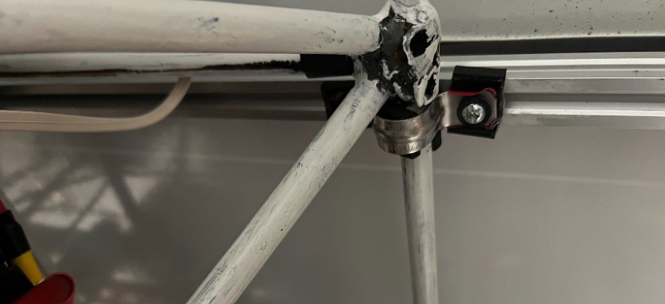
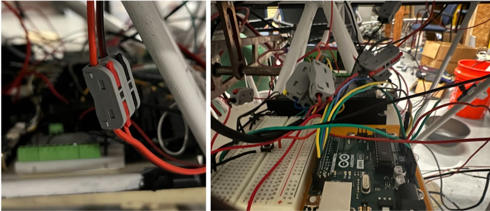
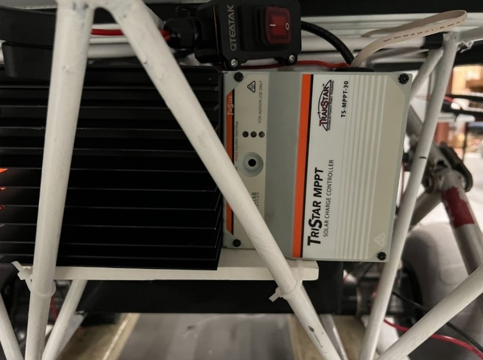

How to Disassemble LOUIS
The following guide will help you disassemble LOUIS for transportation purposes. The disassembly takes around 6.5 minutes, while the assembly time takes around 10 minutes.
The rover's fully assembled state has the solar panel charge controller system fully connected and the cleaning system fully connected to the arduino. A detailed wiring diagram will also be included to make sure all the wires are correctly reassembled. Before doing any work make sure all power is off.
Step 1: Unscrew Electrical Conduit Straps

To begin disassembly, first start by unscrewing all of the electrical conduit straps from underneath the panel and frame. There are 4 straps with 2 screws each.
Note: Having partners for the next portion of the disassembly can make the job much easier by having them lift the panel slightly to get to any hard to reach screws.
Step 2: Disconnect Quick Connections

The next step, move to the front of the rover, and begin disconnecting all wiring to the stepper motors and rotational motors, using their quick connections to their motor driver. These clips make it easier to unwire and rewire the small connections. This also goes for the connections to the limit switches in the arduino.
Step 3: Unscrew Charge Controller Face and Panel Wires

Finally move to the back of the rover to find the solar charge controller and begin removing the 4 screws from the face of the controller. Once that is removed, unscrew the panel wires connected to the points labeled array, and the ground. (The PV wires are the thin ones, the thick battery wires can be left alone.)
Step 4: Remove the Panel
After all this is complete, the panel can be lifted and removed by two people. For the safety of the equipment, it is recommended that the panel be lifted by the spots where the underneath t-track rails and the linear actuator rails meet. It should also be set down on the cable carrier L-Bars to protect the panel.
How to ReAssemble LOUIS
Step 1: Place the Solar Panel Gently on the Frame
To begin assembly, start by having two people set the panel on the rover. Lining it up is not super critical, and can be done later.
Step 2: Wire up the Charge Controller
Following that, remove the face panel of the charge controller and wire up the solar panel in the array port and the ground.
Step 3: Snap the Quick Connections into Place
In the next step, move to the front of the rover, and begin connecting all wiring to the stepper motors and rotational motors, using their quick connections to their motor drivers. This also goes for the connections to the limit switches in the arduino.
Step 4: Reinstall the Electrical Conduit Straps
Once all these connections are checked and secured, line up the panel to be relatively straight (this just needs to be an eye test), and reinstall the electrical conduit straps to the t track rails. The t-track nuts used to secure the screws may have moved around in the rail.
The panel should now be secured and is ready to go.